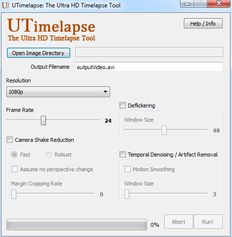

UTimelapse: a tool for creating high-quality timelapse videos
May 4, 2014Here's yet another fun application: UTimelapse, which is a tool that generates timelapse videos by inputting series of still images. The principal aim of the tool is to create high-quality videos without requiring high-end equipment. The tool deals with three main problems that are encountered in timelapse photography: camera shake, flickering, and single-frame artifacts. Before going into more details, let's start with demos:

Camera Shake Reduction
The camera shake reduction feature reduces the camera shake by estimating a homography between consecutive frames using point correspondences and applying transforms to align the frames. For calculation of the point correspondences, two options are provided to the user: fast and robust modes. The fast mode detects the a set of good features in a reference frame. Then, it estimates the optical flow between the consecutive frames to locate the features in the next frame. The robust mode uses more computationally expensive methods to find the point correspondences between frames and tends to produce more stable results, especially on the images that are captured without using a tripod. The robust mode uses the SIFT features and the FLANN algorithm for matching features between consecutive frames. For outlier elimination, it uses the RANSAC algorithm. After computing two sets of matching keypoints between the consecutive frames, the program estimates the homography between the frames and then performs a stability check. To pass the stability check, the estimated homography matrix or the inverse of the matrix should not be close to singular. Therefore, a homography matrix fails the test if the determinant of the matrix is either close to zero or very large. An unstable homography is usually observed at scene changes where there are no valid point correspondences between frames. Thus, if an estimated homography fails the test, then the current frame is considered a new scene, and no transformation is applied to the frame. If it passes the test then the current frame is warped and aligned with the previous frame using an affine or perspective transform depending on the preferences of the user. Optionally, the images are zoomed manually to crop margins.
Deflickering
The deflickering feature works as a brightness and contrast normalizer and helps reduce the frame-to-frame illumination and contrast differences. There are two deflickering modes available in the software: global and local modes. The global mode computes the mean and standard deviation of pixel intensity values for each frame and keeps them in circular buffer arrays. The circular buffers work as running average filters on the mean and standard deviation of the intensity values to smooth brightness/contrast fluctuations. The local (experimental) mode deals with local variations in image brightness. For example, in the demos, the local deflicker smooths the cloud shadows that cause local flicker. The local deflicker assumes that the flickers occur at lower spatial frequencies. To achieve smooth transitions at the low frequencies, it uses a circular buffer to keep and blend the discrete cosine transform (DCT) coefficients of the consecutive frames. This mode is still being developed and not available in the latest stable release of the software.
Temporal Smoothing and Artifact Removal
This feature uses temporal smoothing filters to eliminate temporal jitters and attenuate spatial noise in the frames. The feature uses a buffer to keep previous and next frames with respect to the current frame. Then, depending on initial settings, it takes either the median or the Gaussian weighted average of the pixels in the previous and next frames. In other words, it applies temporal median or Gaussian filters.
I would like to note that most of the methods that I have used here are well-known methods, so I do not claim novelty for the most part. The DCT-based deflicker, on the other hand, has never been proposed before in the literature to the best my knowledge.